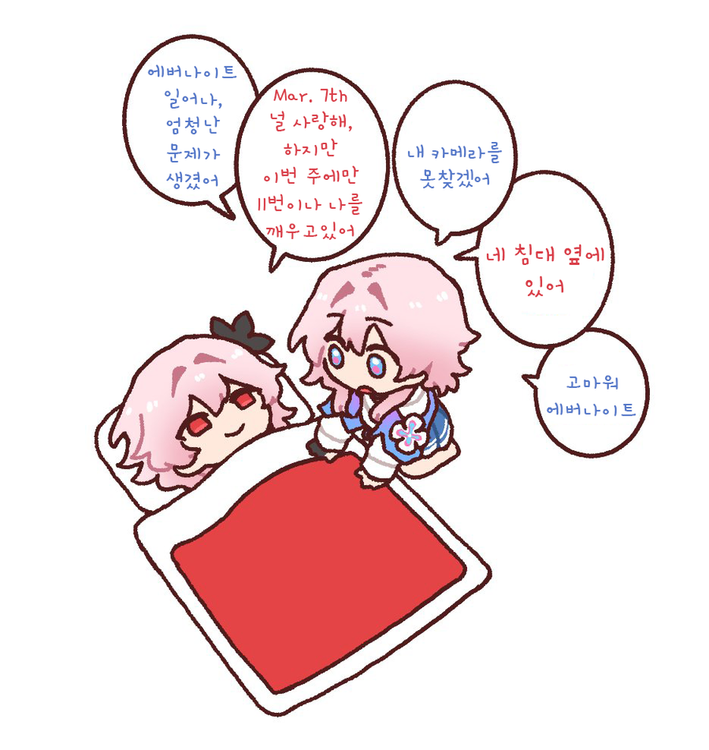
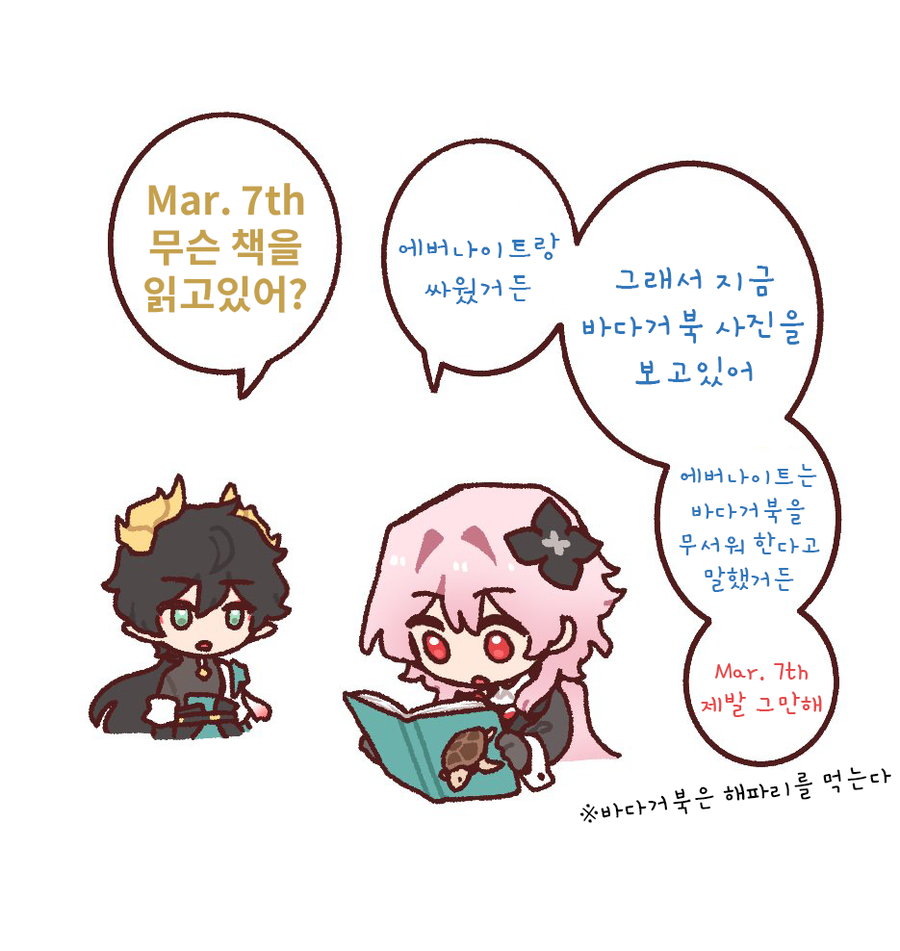
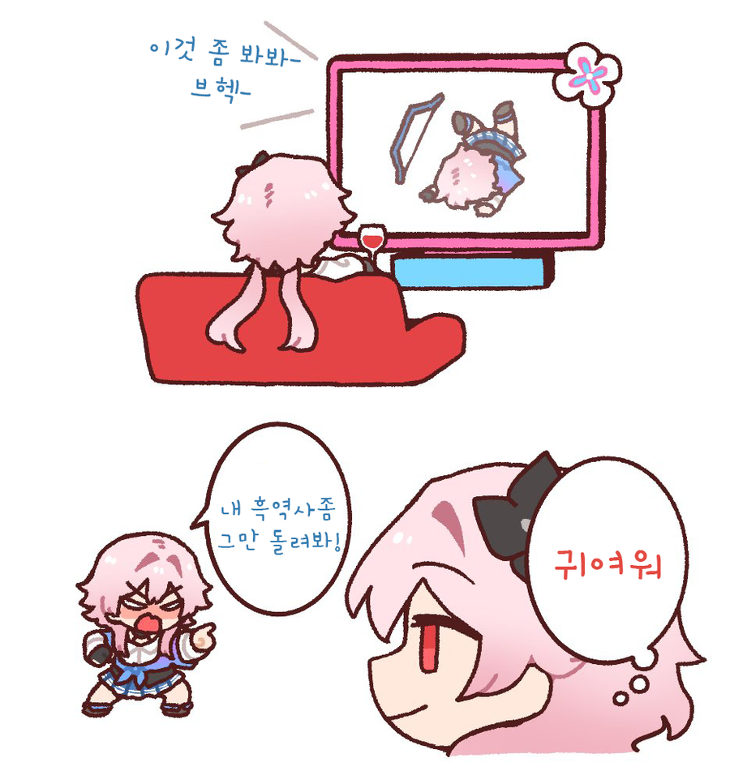
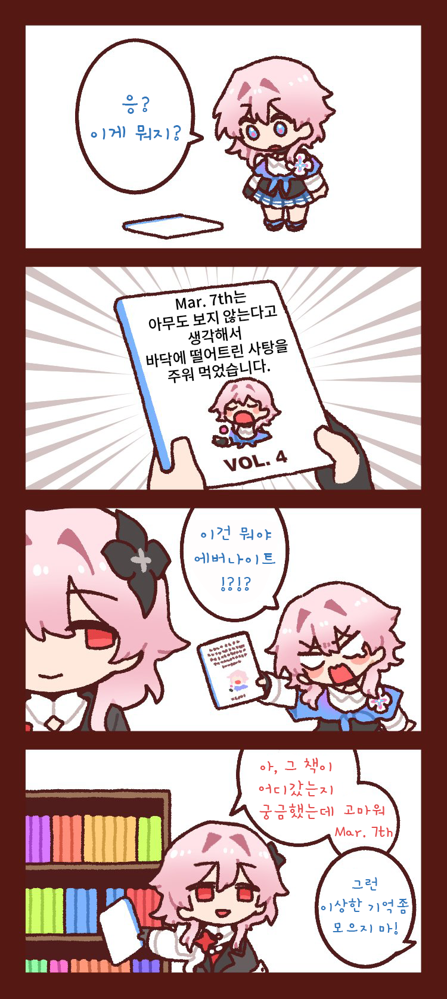
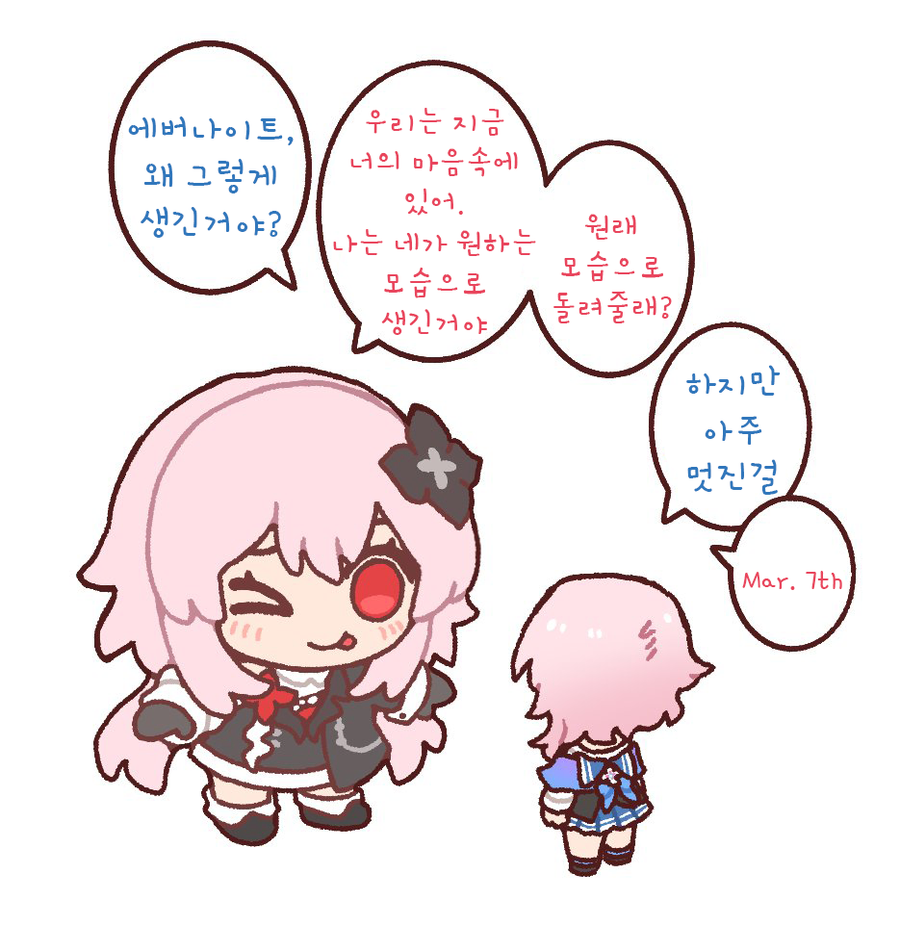
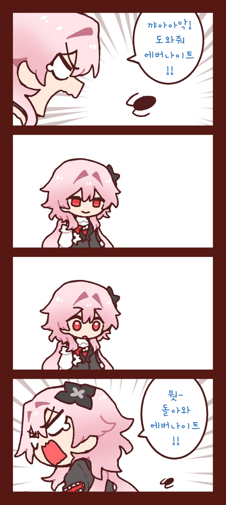
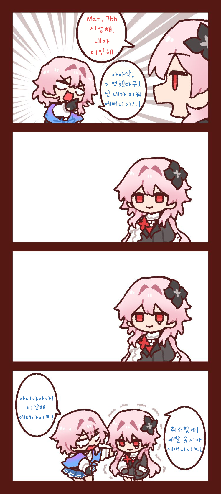

에버나이트 귀여워







에버나이트 귀여워
미즈키 나노카
내면의 흑화한 나도 바퀴는 무서운 법
어디애니임?
붕괴 스타레일
턴제 게임임
이중인격이면 두턴줌?
TMI) 파란 여자애는 Mar. 7th란 이름이며 = 3월 7일 = 삼칠이 라 불림
까만 여자애는 에버나이트란 이름이며 흑칠이 또는 까칠이라 불린다.
이름이 왜 그따구야
기억을 잃고 발견된 날이 3월 7일이라 자기 이름을 그렇게 지음
앗...아아
우우~!
이거 요즘 스토리 괜찮음?
발암 스토리 있다해서 하려다가 일단 멈췄는데 그거 해결 됨?
해결 안됐고 1년동안의 스토리는 계속 우하향중임
1년뒤에 다시 고민 ㄱ
친절한 정보 압도적 감사!
아니야 재밌음 지금 버전도 스토리 괜찮음
오케이 의견이 갈리니 의견이 수렴될때까지 기다려봐야겠다 ㅋㅋㅋㅋㅋ
난 이번 버전만 생각하면 우상향이라고 보는데
근데 스타레일 전체로 보면 최고점은 아님
아하
그냥 위개붕이는 최근 스토리들 취향이 안맞았나봄 나는 지금 스토리도 재미있게 플레이중임 조졌다는 엠포리어스 결말도 호불호가 존나갈리지만 나쁘지않았음
아하 호쪽이 좀 많네 살짝 스토리 보는 정도로 해봐야겠다
나는 재미있었어.
스토리 짧은 기간동안 계속 내는걸 감안한다는 가정 하에 잘 짰다고 생각함.
사람 갈려나가는게 눈에 보임.
문제는 어... 사람들 눈이 너무 높아진거 같기도 하고.
아하 뭔지 알겠다 ㅋㅋㅋㅋㅋ 오늘밤에 해봐야겠다 ㅋㅋㅋㅋ
심각할 정도로 안좋았던 스토리는 아니었나보네 ㅋㅋㅋㅋㅋㅋ
좋았던 사람들의 이야기가 많으니 안좋았던 내 평가를 추가해보자면..
1. 이야기의 스케일은 계속 커지는데 주연들의 행동반경은 점점 작아짐
2. 주인공 땀샘에서 페로몬이 나옴
3. 군상극인데 회색진영이 없음
4. 웃음 테마 행성인데 개그와 인게임 기믹이 재미가 없음
최신지역인 이상낙원 스토리와 페나코니, 엠포리어스와 비교했을때
우상향중이라는 평가는 동의가 어렵다..
아하 전체적인 흐름에서 주인공 상관없이 스토리가 진행되나보네
주인공 상관 있이 스토리 진행됨
아하 ㅋㅋㅋㅋㅋ
현재까지는 재미있음 엠포도 마지막에 조져서 그렇지 그전까지는 좋았고 현재 이상낙원도 스토리는 좋음
아하아하
아하에 눈을 떳구나 어서오거라 이상낙원에
아 맞네 아하가 최강자중 하나였네 ㅋㅋㅋㅋㅋㅋㅋㅋ
내 아내임


나가요즈키..
미식이네